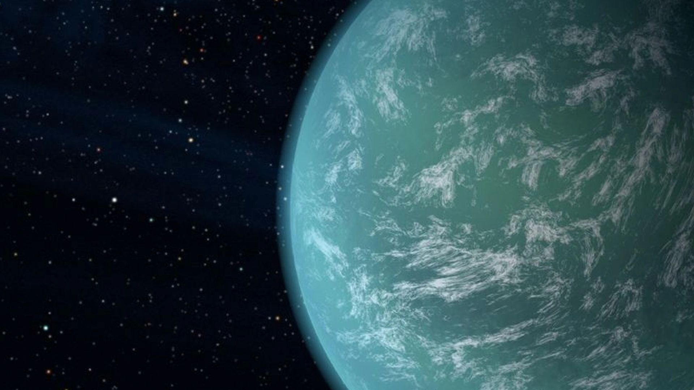

13 min read
Kepler-22b, a mesmerizing exoplanet nestled within the habitable zone of its star, Kepler-22, stands as a beacon of potential in the relentless search for worlds beyond our own solar system. Discovered in December 2011 by NASA's prolific Kepler Space Telescope, this enigmatic world captivates the imagination of astronomers and space enthusiasts alike. Situated approximately 620 light-years away from Earth in the constellation of Cygnus, Kepler-22b's discovery marks a significant milestone in the exoplanetary science, representing one of the first Earth-sized planets located in the habitable zone of a star similar to our Sun.
The planet orbits its host star every 290 days, a period remarkably close to that of Earth's own annual journey around the Sun. This positioning within the so-called "Goldilocks zone" suggests that conditions on Kepler-22b could be just right for liquid water to exist on its surface — a critical factor in the quest to find life beyond Earth. With a radius about 2.4 times that of Earth's, Kepler-22b challenges our understanding of planetary classification, straddling the boundary between a "super-Earth" and a "mini-Neptune." Its precise composition remains a mystery, with scientists speculating on a vast range of possibilities from a rocky world with a thick atmosphere to an ocean-covered planet with a deep, global sea.
The discovery of Kepler-22b underscores the exceptional capabilities of the Kepler mission and the transformative power of transit photometry in exoplanet detection. By observing the diminution of a star's brightness as a planet transits in front of it, astronomers can deduce the planet's size and orbit. This method has revolutionized the field, enabling the identification and study of distant worlds with unprecedented detail and expanding our comprehension of the universe's vast diversity. Kepler-22b's existence within its star's habitable zone not only heightens its potential for harboring life but also exemplifies the broader search for habitable environments beyond Earth. This pursuit has propelled the development of advanced observational technologies and methodologies, promising to bring us closer to understanding the atmospheres of these distant planets and, perhaps, finding signs of biological activity.
In the grand cosmic arena, Kepler-22b stands as a testament to human curiosity and our undying quest to reach out into the unknown. It's a world that not only expands our knowledge but also fuels our dreams of distant shores under alien suns, where life might dance in forms unfathomable to us. The story of Kepler-22b is far from over; it's just beginning to unfold, promising chapters yet to be written in the quest for our place among the stars.
Identified by NASA's Kepler Space Telescope in 2011
Completes an orbit around its star in about 290 days.
With a radius about 2.4 times that of Earth's
620 light-years away in the constellation Cygnus.
Kepler-22b captivates the scientific community as a prime candidate for habitability, orbiting comfortably within its star's habitable zone where conditions may allow for liquid water—a fundamental prerequisite for life as we know it. Discovered by NASA's Kepler Space Telescope, this exoplanet's precise distance from its host star suggests a climate that could support stable bodies of water on its surface, making it an ideal focus for studies on potential life-sustaining environments. The intrigue surrounding Kepler-22b is further heightened by its size, more than twice that of Earth, which presents a unique blend of characteristics that blur the lines between rocky planets and gas giants, and fuels speculation about its atmospheric composition and surface conditions. This breakthrough discovery propels the field of exoplanetary science forward, emphasizing the importance of Kepler-22b as a cornerstone in our search for habitable worlds beyond our solar system. It stands as a testament to human curiosity and the advancements in space exploration technologies, driving scientists to refine their methods for detecting and analyzing exoplanets. Kepler-22b not only broadens our understanding of where life could potentially thrive in the cosmos but also serves as a crucial stepping stone in our ongoing quest to answer the profound question of whether we are alone in the universe.